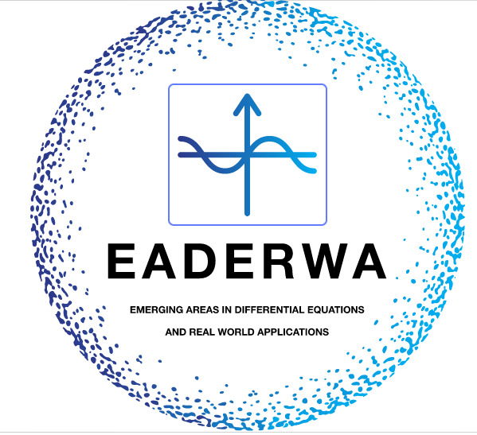

Workshop on Emerging Areas in Differential Equations and Real-World Applications (EADERWA)
Home
Committees
Invited Speakers
Workshop Schedule
Registration
Practical info
Venue
About Gandhinagar
Committees
Honary chairman
Prof. K S Dasgupta, Director, DA-IICT Gandhinagar
International Advisory Committee: (Tentative)
Prof. Abdon Atangana, Institute for groundwater studies,UFS
Prof. Dumitru Bulaneu, Institute of Space Sciences, Magurele-Bucharest, Romania
Prof. Martin A Nowak, Harvard University
Prof. R P Aggarwal, Texas (A&M) University, USA
Prof. A K Nandakumaran, IISc Bangalore
Prof. Amiya Kumar Pani, IIT Bombay
Prof. B V Rathish Kumar, IIT Kanpur
Prof. D Bahuguna, IIT Kanpur
Prof. G D Veerappa Gowda, TIFR – CAM Bangalore
Prof. (Retd.) Peeyush Chandra, IIT Kanpur
Prof. S Sundar, IIT Madras
Prof. Vishnu Dutt Sharma, Emeritus Fellow, IIT Bombay
Prof. V Sree Hari Rao, Director & Principal Research Scientist, FSRT, Hyderabad
Dr. Narottam Sahoo, Advisor, DST, Gujarat
Program Chairs:
Dr. Madhu Kant Sharma, Assistant Professor, DA-IICT Gandhinagar
Program Committee:
Prof. B V Rathish Kumar, IIT Kanpur
Prof. Manish Kumar Gupta, DA-IICT Gandhinagar
Dr. Ahlad Kumar
Dr. Bipin Porwal, Scientist - E, Indian Institute of Tropical Meteorology, Pune.
Dr. Jaideep Mulherkar, Associate Professor, DA-IICT Gandhinagar
Dr. Madhu Kant Sharma, Assistant Professor, DA-IICT Gandhingar
Dr. Muslim Malik, Associate Professor, IIT Mandi
Dr. Naresh K. Mallenahalli, Scientist, NRSC, ISRO, Hyderabad
Dr. Prashant Srivastava, Associate Professor, IIT Patna
Dr. Ritesh Kumar Dubey, Associate Professor, SRM Chennai
Dr. Shruti Dubey, Associate Professor, IIT Madras
Dr. Syed Abbas, Associate Professor, IIT Mandi
Local Organizing Committee:
Prof. Manish Kumar Gupta
Dr. Ahlad Kumar
Dr. Jaideep Mulherkar, Associate Professor, DA-IICT Gandhinagar
Dr. Madhu Kant Sharma
Dr. Nabin Kumar Sahu
Dr. Rahul Mutthu
Student Volunteers:
Mr. Biswajit Prusty (data organiser)
Mr. Dhiraj Golhar (content creater)
Mr. Harsh Metkel (Logo Developer)
Mr. Shivam Gupta (Website Developer)


martin_nowak.jpg)